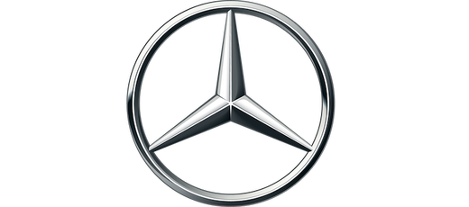

Mercedes-Benz

Mercedes-Benz is a global automobile manufacturer and a division of the German company Daimler AG. The brand is known for luxury vehicles, buses, coaches, and trucks. The headquarters is in Stuttgart, Baden-Württemberg.
The name first appeared in 1926 under Daimler-Benz, but traces its origins to Daimler-Motoren-Gesellschaft's 1901 Mercedes and Karl Benz's 1886 Benz Patent-Motorwagen, which is widely regarded as the first gasoline-powered sdautomobile. The slogan for the brand is "the best or nothing" and Mercedes-Benz was one of the top growing brands in 2014 with 18% growth.
Current model range
Mercedes-Benz offers a full range of passenger, light commercial and heavy commercial equipment. Vehicles are manufactured in multiple countries worldwide. The Smart marque of city cars are also produced by Daimler AG.
- A-Class – Hatchback
- B-Class – Multi Purpose Vehicle (MPV)
- C-Class – Saloon, Estate, Coupé and Cabriolet
- CLA-Class – 4 Door Coupé and Estate
- CLS-Class – 4 Door Coupé and Estate
- E-Class – Saloon, Estate, Coupé and Cabriolet
- G-Class – Sports Utility Vehicle (SUV)
- GLA-Class – Compact Sports Utility Vehicle (SUV)/ Crossover
- GLC-Class – Sports Utility Vehicle (SUV)
- GLE-Class – Sports Utility Vehicle (SUV)
- GLS-Class – Large Sports Utility Vehicle (SUV)
- S-Class – Luxury Saloon, Coupé & Cabriolet
- SL-Class – Grand Tourer
- SLC-Class – Roadster
- V-Class – Multi Purpose Vehicle (MPV)/ Van
- AMG GT – Sports car/ Supercar
Car nomenclature
Until 1994, Mercedes-Benz utilized an alphanumeric system for categorizing their vehicles, consisting of a number sequence approximately equal to the engine's displacement in liters multiplied by 100, followed by an arrangement of alphabetical suffixes indicating body style and engine type.
- "C" indicates a coupe or cabriolet body style (for example, the CL and CLK models, though the C-Class is an exception, since it is also available as a sedan or station wagon).
- "D" indicates the vehicle is equipped with a diesel engine.
- "E" (for "Einspritzung") indicates the vehicle's engine is equipped with petrolfuel injection. In most cases (the 600 limousine and Mercedes E-Class being the exceptions), if neither "E" or "D" is present, the vehicle has a petrol engine with a carburettor.
- "G" was originally used for the Geländewagen off-road vehicle, but is now applied to Mercedes SUVs in general (for example, the GLA and GLK).
- "K" was used in the 1930s, indicating a supercharger ("Kompressor") equipped engine. Two exceptions : the SSK and CLK, where K indicates "Kurz" (short-wheelbase).
- "L" indicates "Leicht" (lightweight) for sporting models, and "Lang" (long-wheelbase) for sedan models.
- "R" indicates "Rennen" (racing), used for racing cars (for example, the 300SLR).
- "S" Sonderklasse "Special class" for flagship models, including the S-Class, and the SL-Class, SLR McLaren and SLS sportscars.
- "T" indicates "Touring" and an estate (or station wagon) body style.
Some models in the 1950s also had lower-case letters (b, c, and d) to indicate specific trim levels. For other models, the numeric part of the designation does not match the engine displacement. This was done to show the model's position in the model range independent of displacement or in the price matrix. For these vehicles, the actual displacement in liters is suffixed to the model designation. An exception was the 190-class with the numeric designation of "190" as to denote its entry level in the model along with the displacement label on the right side of the boot (190E 2.3 for 2.3-litre 4-cylinder petrol motor, 190D 2.5 for 2.5-litre 5-cylinder diesel motor, and so forth). Some older models (such as the SS and SSK) did not have a number as part of the designation at all.
For the 1994 model year, Mercedes-Benz revised the naming system. Models were divided into "classes" denoted by an arrangement of up to three letters (see "Current model range" above), followed by a three-digit (or two-digit for AMG models, with the number approximately equal to the displacement in litres multiplied by 10) number related to the engine displacement as before. Variants of the same model such as an estate version or a vehicle with a diesel engine are no longer given a separate letter. The SLR, SLS and GT supercars do not carry a numerical designation.
Today, many numerical designations no longer reflect the engine's actual displacement but more of the relative performance and marketing position. Despite its engine displacement in two litres, the powerplant in the A45 AMG produces 355 brake horsepower so the designation is higher as to indicate the greater performance. Another example is the E250 CGI having greater performance than the E200 CGI due to the different engine tuning even though both have 1.8-litre engines. From the marketing perspective, E200 seems more "upscale" than E180. Recent AMG models use the "63" designation (in honor of the 1960s 6.3-litre M100 engine) despite being equipped with either a 6.2-litre (M156), a 5.5-litre (M157) or even a 4.0-litre engine.